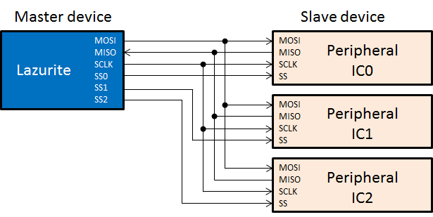
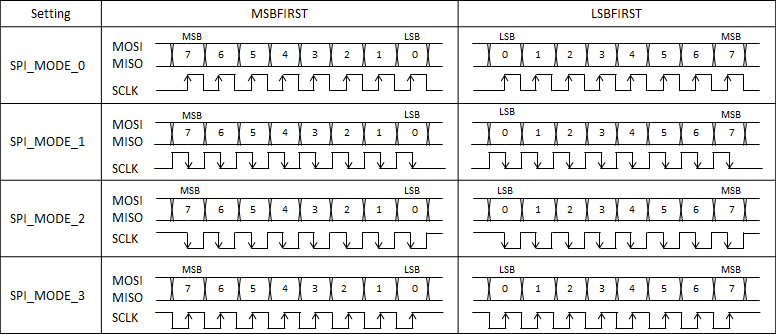

SPIは様々なマイコンの周辺ICによってサポートされている同期式シリアル通信の一つです。 Lazuriteでは、マイコン ML620Q504がマスターとなり、周辺ICはスレーブとして動作します。
本関数を使用するためには、"プロジェクト"メニューの"ライブラリを使用する"から、SPIのライブラリを有効にしてください。
Lazurite Sub-GHzで使用しているマイコン
ML620Q504は2系統のSPIを搭載しています。SPIはピン番号の11ピン(MOSI)、12ピン(MISO)、13ピン(SCLK)で使用することができます。
もう一系統は、SPI0というライブラリ群で、無線モジュールBP3596を制御するために使用しています。
◆SPIによる周辺機器との接続方法
SPIでは次の様に周辺機器を接続することができます。
MOSIは、Master Out / Slave Inで、LazuriteがPeripheral ICに信号を送信します。
MISOは、Master In / Slave Outで、Peripheral
ICが出力する信号をLazuriteが受信します。
SCLKは、Lazuriteが出力する信号で、信号を伝送するためのクロックです。
SSは、Peripheral ICを識別するための信号として使用します。

◆シリアル転送のモード SPI.setDataMode
シリアル転送タイミングは、モードの設定によって次の4種類に対応しています。Peripheral ICのデータシートに記載されているタイミングに合わせて、SPI.setDataMode関数で設定してください。また、この設定はSPI.begin()でSPIの動作を開始する前に設定する必要があります。
◆ビットオーダー SPI.setBitOrder
SPI.transferで送受信する信号を、MSB firstで送信するかLSB firstか設定するコマンドです。

◆クロックの分周比 SPI.ClockDivider
SPIで送信するクロック SCLKの分周比を設定します。
Lazuriteのメインクロックは16MHzなので、それに合わせてSCLKの分周比を設定してください。
|
設定値 |
SCLKの周波数 |
|
SPI_CLOCK_DIV2 |
8MHz |
|
SPI_CLOCK_DIV4 |
4MHz |
|
SPI_CLOCK_DIV8 |
2MHz |
|
SPI_CLOCK_DIV16 |
1MHz |
|
SPI_CLOCK_DIV32 |
500kHz |
|
SPI_CLOCK_DIV64 |
250kHz |
|
SPI_CLOCK_DIV128 |
125kHz |
| SPI.begin(); | SPIの初期化を行います。 | |
| unsigned char SPI.transfer(data) | SPIのデータ Read/Writeを行います。 | |
| SPI.setBitOrder(mode) | MSBFIRST, LSBFIRSTを指定します。 | |
| SPI.setDataMode(mode) | SPIのMODE0～MODE3を指定するコマンドです。 | |
| SPI.setClockDivider(ckdiv); | SCLKのクロックの分周比を指定します。 | |
| + | SPI.end(); | SPIの終了を行います。 |
* Arduinoと差異がある関数です。
+ Arduinoになく、Lazuriteにある関数です。
Laurite Sub-GHzでは、BP3596モジュールに搭載されているML7395を制御するプログラムで使用しています。
下記は、LazuriteIDE\hardware\lazurite_subghz\sub_ghz\CTI\hwif\hal_lazurite.cのプログラムです。
HAL_SPI_setup(void)は、SPIブロックを初期化しています。
HAL_SPI_transferは、wdataのポインタが示すデータからsizeバイトの値をMOSIから転送し、MISOから受信したデータをrdataに格納するプログラムです。
driver_digitalWrite関数は、Arduino互換端子で公開されていない端子を使用するための関数で、機能はdigitalWriteと同じです。